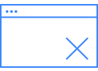
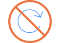
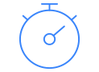

Background Survey
Self Assessment
Setup
Sample Question
Begin Test
유의사항을 읽고 각 체크박스를 선택하여 주십시오.

시험 중 다른 웹사이트나 프로그램 실행 시 시험창이 자동 종료되고 로그인 화면으로 다시 이동하게 됩니다.

시험 중 화면을 새로고침하거나 브라우저의 뒤로가기 버튼을 누르는 경우, 시험창이 자동 종료되고 로그인 화면으로 다시 이동하게 됩니다.
각 질문의 내용에 부합하여 최대한 자세하게 답변하되, 너무 큰소리로 말해 다른 수험자에게 방해가 되지 않도록 주의 바랍니다.

시험 제한 시간은 40분입니다. 반드시 감독관의 시작 안내가 있은 후 Begin을 누르고 시험을 시작하십시오.
기술적인 문제 발생 시, 당황하지 마시고 즉시 감독관에게 보고 바랍니다. 재접속 시 문제가 있었던 부분부터 다시 진행하며, 추가시간을 부여합니다.